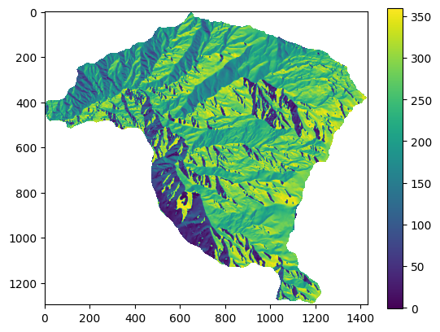
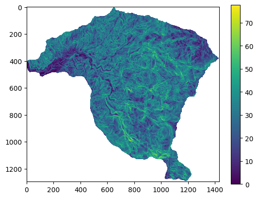
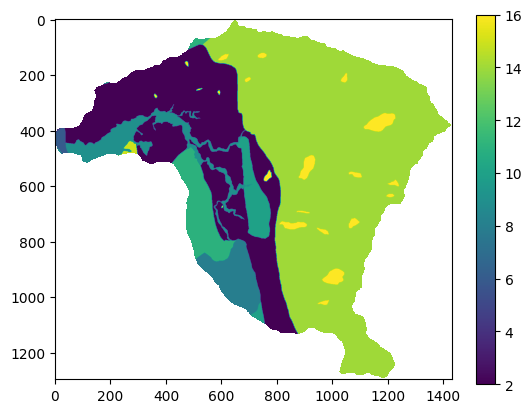
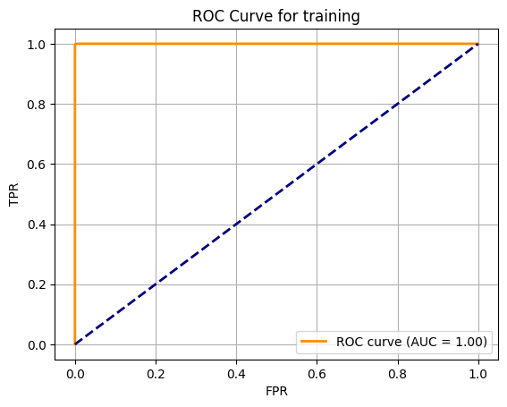
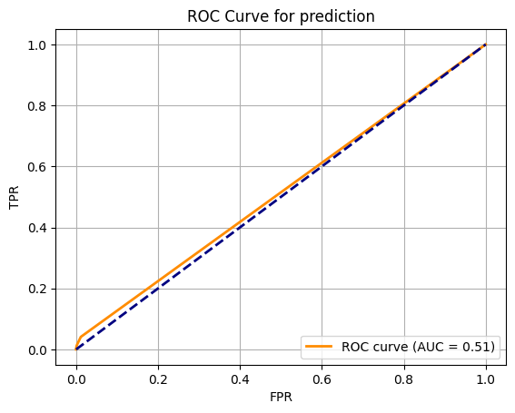
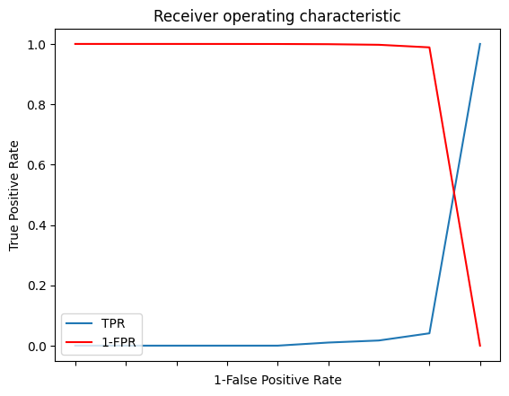
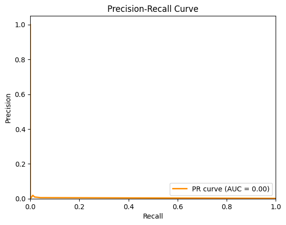
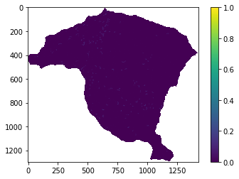

Evaluación del modelo#
Objetivos de aprendizaje#
Al finalizar este capítulo, el estudiante será capaz de:
Construir e interpretar una matriz de confusión para evaluar modelos de susceptibilidad a movimientos en masa.
Calcular e interpretar métricas de evaluación: precisión, recall, F1-score, especificidad y AUC-ROC.
Trazar curvas ROC y Precisión-Recall e identificar el umbral óptimo de clasificación.
Comparar múltiples modelos usando AUC como métrica de ranking.
Distinguir entre evaluación con datos de entrenamiento y datos independientes (validación cruzada).
Duración estimada: 2–3 horas
Requisitos previos#
Python:
scikit-learn(metrics,model_selection),pandas,matplotlib.Estadística: probabilidad de detección, tasa de falsos positivos, pruebas de hipótesis básicas.
Capítulo anterior:
09_estadistico— los modelos evaluados aquí fueron entrenados en ese capítulo.
Tanto los modelos heurísticos, estadísticos o con base física son simplemente simplificaciones y aproximaciones a la realidad, la cual es mucho más compleja y guarda elementos que desconocemos. Es por eso que debemos evaluar que tanto de aquella realidad estamos realmente representando. Para esto inicialmente debemos establecer las siguientes definiciones:
Exactitud (accuracy): se refiere al grado de qué tan cerca está la medida o valor mapeado o clase de un mapa a su valor verdadero o clase en el campo.
Error: la diferencia entre el valor mapeado o la clase y el valor o clase verdadero.
Precisión: referente a una medida como el grado al cual medidas repetidas bajo condiciones invariantes muestran el mismo resultado.
Incertidumbre (uncertainty): grado con el cual las características actuales del terreno pueden ser presentadas espacialmente en un mapa.
Los términos objetividad y subjetividad son usados para señalar si los diferentes pasos tomados en la determinación de un grado de amenaza son verificables y reproducibles por otro investigador, o si ellos dependen del juicio personal del investigador.

Fig. 83 Exactitud y precisión de un modelo.#
Existen dos tipos de incertidumbre asociada a los modelos. La incertidumbre aleatoria que se refiere a la variabilidad que conocemos. Está implícita en muchas de las variables que incorporamos dentro de los modelos. Esta incertidumbre puede ser incorporada en nuestro análisis, y es precisamente la que tratamos de evaluar. Pero es importante tener en cuenta que existe la incertidumbre epistémica, la cual está asociada al desconocimiento o los limitantes que tenemos para describir dichos fenómenos físicos que estamos modelando. Debido precisamente a que se refiere a aquellos elementos que aún desconocemos, no puede entonces evaluarse o incorporarse directamente en los modelos.
Desempeño y predicción#
La aceptación de un modelo debe responder al menos a tres criterios:
Su adecuación (conceptual y matemáticamente) en describir el comportamiento del sistema
Su robustez a pequeños cambios de los parámetros de entrada (sensibilidad a los datos)
Su exactitud en predecir los resultados.
De esta forma la evaluación de un modelo debe ser revisada contra la información usada para construir el modelo, la cual se refiere a la bondad del ajuste del modelo, y responde a la pregunta ¿qué tan bien el modelo se desempeña?. Pero también debe evaluarse el modelo contra el futuro, y que responde a la pregunta ¿qué tan bien el modelo predice?, y se refiere a la habilidad del modelo para predecir, en este caso, la ocurrencia de futuros deslizamientos.
Validación cruzada#
Como se menciona anteriormente la evaluación del modelo se debe realizar en dos campos, en términos del desempeño y en términos de la capacidad de predicción. La más compleja de estas evaluaciones se refiere a la capacidad de predicción, ya que sólo la ocurrencia de nuevos eventos a lo largo del tiempo puede determinar la capacidad de predicción de nuestro modelo. Pero precisamente la evaluación del desempeño, como de la predicción, se requieren al momento de construir el modelo.
Para esto existen diferentes estrategias de partición de los datos que nos permiten obtener estas evaluaciones. Esta técnica se denomina validación cruzada y se refiere a un método de remuestreo que utiliza diferentes porciones de los datos para entrenar y evaluar un modelo en diferentes iteracciones. Esta técnica se puede utilizar tanto para la partición de datos espacialmente, es decir utilizar un área especifica para entrenar el modelo y evaluar su desempeño, y otra área de la zona de estudio, para evaluar la capacidad de predicción. O es también posible la partición temporal, es decir utilizar los datos en un rango de tiempo para entrenar el modelo y evaluar el desempeño del modelo, y utilizar otro rango de tiempo, generalmente posterior al inicial, para evaluar la capacidad de predicción. Para la evaluación de modelos de susceptibilidad por movimientos en masa se utiliza la primera de estas estrategias, partición espacial; sin embargo dicha partición no se realiza generalmente en áreas, ya que posiblemente existan diferencias entre ambas áreas en el mecanismo que gobierna el proceso, por lo tanto el error aumenta pero debido a que el modelo construido no representa el mecanismo del área donde se va a evaluar. De esta forma la partición de los datos se realiza aleatoriamente sobre toda el área de estudio.

Fig. 84 Procedimiento para validación cruzada.#
No existe un porcentaje o radio de separación único utilizado, pero los porcentajes más comunes utilizados están entre 80:20 y 70:30, lo cual significa 80% de los datos para entrenamiento o construcción del modelo, y el 20% restante para evaluar la capacidad de predicción.
La guía del Servicio Geológico Colombiano (2017) establece que la selección de los subconjuntos de entrenamiento y validación del inventario de movimientos en masa puede basarse en criterios espaciales, temporales o de selección aleatoria. Una buena práctica recomendada para validar la capacidad de predicción espacio-temporal consiste en entrenar el modelo con un inventario histórico de movimientos en masa de tipo geomorfológico (es decir, eventos antiguos, ya cicatrizados en el terreno) y validarlo contra un inventario de eventos recientes o de un evento detonante específico, lo que permite evaluar de forma más rigurosa la verdadera capacidad predictiva del modelo ante condiciones futuras, en lugar de una simple partición aleatoria del mismo inventario. En Colombia, la razón 80:20 es la más consistentemente reportada: tanto en el estudio del Valle de Aburrá (Aristizábal et al. [2019]) como en el estudio rural de Andes, Antioquia (), se destinó el 80% del inventario histórico para la construcción del modelo y el 20% restante como conjunto independiente para evaluar la tasa de predicción.
Matriz de confusión#
Tanto para el desempeño como para la capacidad de predicción se utilizan las mismas métricas de evaluación, solo que se especifica si se refiere al desempeño del modelo o la capacidad de predicción. Generalmente, las métricas para el desempeño del modelo presentan mejores valores comparado con la capacidad de predicción. Y esto se debe a que el desempeño se evalúa con datos que el modelo conoce y a los cuales se ajustó, mientras que los datos que evaluan la capacidad de predicción no han sido conocidos por el modelo, y precisamente entre las dos métricas, la que generalmente se presenta al final de los procedimientos es la capacidad de predicción. La evaluación del desempeño del modelo corresponde a un paso interno que permite al modelador ajustar los parámetros del modelo.
Para la evaluación de los modelos de susceptibilidad por movimientos en masa se utilizan diferentes métricas:
Distancia a la clasificación perfecta
curva ROC (Receiver Operating Characteristic)
Área bajo la curva ROC (AUROC)
Sin embargo todas estas parten de la matriz de confusión o también denominada matriz de contingencia o matriz de error. Esta matriz corresponde a una tabla cruzada de frecuencias para una variable categórica binaria, que compara los resultados de salida del modelo contra los valores de la variable dependiente reales o medidos, en este caso el inventario de movimientos en masa. En palabras sencillas, compara las predicciones del modelo con los datos.

Fig. 85 Matriz de confusión.#
A partir de dicha matriz se obtienen los verdaderos positivos (tp), los cuales se refieren a las celdas que el modelo señala como inestables y que efectivamente en el inventario de movimientos en masa son eventos, los verdaderos negativos (tn), los cuales se refieren a las celdas que el modelo señala como estables y que en el inventario de movimientos en masa no hay registro de eventos. Tanto los tp como los tn corresponden a los aciertos del modelo. Por otro lado los errores son evaluados por los falsos positivos (fp), también conocidos como errores tipo I, los cuales se refieren a las celdas que el modelo señala como inestables y que en el inventario de movimientos en masa no registran eventos, y los falsos negativos (fn), también conocidos como errores tipo II, los cuales corresponden a las celdas que el modelo señala como estables y que en el inventario de movimientos en masa registran eventos.
Considerando que el mayor interés en los mapas de susceptibilidad corresponde a identificar aquellas áreas potencialmente inestables, generalmente son más importantes las celdas inestables, es decir los verdaderos positivos y falsos positivos. Por lo tanto, se debe ser cuidadoso con las métricas utilizadas, ya que esto puede llevar a errores en este tipo de modelos que son por naturaleza desbalanceados. Un modelo muy malo puede tener valores de tp muy altos simplemente asignándole valores de inestable a todas las celdas de la cuenca. Esto arroja un modelo con un desempeño y capacidad de predicción del 100%, sin embargo si se revisan los falsos positivos, es decir los errores por sobre estimación, estos también van a ser cercanos al 100%. Entonces un buen modelo es aquel que identifica las áreas inestables, altos valores de tp, y al mismo tiempo valores bajos de fp. Pero la realidad señala que el aumento de los tp lleva consigo el aumento de los fp, por lo tanto un buen modelo debe encontrar el mejor equilibrio entre ambas métricas.
A partir de esta matriz se construye una serie de métricas que permite evaluar el modelo:
False positive rate#
También conocido como error tipo I, y explica la capacidad que tiene el modelo de equivocarse entre las celdas estables.
True negative rate#
También conocido como specificity o recall y explica la capacidad que tiene el modelo de acertar entre las celdas inestables.
False negative rate#
También denominado error tipo II, y explica la capacidad que tiene el modelo de equivocarse entre las celdas inestables.
True positive rate#
También conocido como precision, y explica la capacidad que tiene el modelo de acertar entre las celdas estables
Accuracy#
Se refiere a que también el modelo clasifica, tanto celdas estables como inestables, con respecto al total de celdas, es decir el porcentaje de celdas que acierta el modelo. Esta métrica también es afectada por el desbalanceo original que representa el problema. Es decir, que puede arrojar valores muy altos, aunque el modelo sea mediocre, ya que los verdaderos negativo tn tienden a ser muy altos, es fácil predecir los no, y esto incrementa el valor del accuracy.
F-measure#
Esta métrica trata de compensar el desbalanceo y se estima como.
\(F-measure=\frac{2*Recall*Precision}{Recall+Precision}\)
Curva ROC#
La matriz de contingencia puede llevarse a un espacio bidimensional que compara los True positive rate o Sensitivity en el eje y contra el False positive rate en el eje x, que se estima como \(1-Specificity\). Esto nos permite comparar el desempeño de diferentes modelos. El modelo con el mejor desempeño teórico posible corresponde a la esquina superior derecha del gráfico, ya que representa el punto con el 100% de aciertos contra el 0% de equivocaciones. La distancia euclidiana a dicho punto corresponde a la Distancia a la clasificación perfecta (r), por lo tanto los modelos con una menor distancia presentan un mejor desempeño.
\(r=\sqrt{fpr^2 + (1-tpr)^2}\)

Fig. 86 Distancia a la clasificación perfecta.#
Hasta este punto hemos evaluado métricas que requieren que la variable dependiente \(y\) sea binaria, es decir 0 ó 1. Esto implica que para modelos que arrojan un rango de valores para cada celda, donde un extremo de estos valores representa celdas inestables y el otro extremo representa celdas estables, es necesario entonces establecer un umbral que separe entre estos dos rangos, estables e inestables. Para modelos con base fisica basados en el factor de seguridad, este procedimiento es mucho más sencillo, porque el valor del factor de seguridad de 1 representa un umbral establecido por el propio modelo. Para modelos con regresión logística, bivariados, o incluso modelos con base física pero basados en índice de confiabilidad, por ejemplo, dicho umbral no es claro. Esto es importante porque entonces los resultados de la evaluación del modelo están en función del umbral seleccionado. ¿Cómo entonces poder evaluar un modelo con una métrica independiente del umbral?
Lo que responde esto es la curva ROC, y específicamente el área bajo la curva ROC. Esta curva se construye graficando múltiples puntos, tantos como se desee, asignando diferentes umbrales. es decir que la curva ROC representa todos los puntos del modelo para todo el rango de valores del índice de susceptibilidad obtenidos.

Fig. 87 Curva ROC y área bajo la curva (AUROC).#
El valor del AUROC varía entre 0 y 1, donde 1 es un modelo perfecto. Generalmente en el espacio de la curva ROC se gráfica una línea diagonal que representa un AUROC del 0.5. Esta se utiliza como referente de un modelo mediocre que tiene un número igual de aciertos a desaciertos, lo que se busca es obtener modelos con mayores aciertos que desaciertos, por lo tanto implica curvas convexas donde el AUROC > 0.5.
Para traducir el valor cuantitativo del AUC en una categoría cualitativa de desempeño, la literatura de zonificación de amenazas (por ejemplo, las guías SafeLand/JTC-1) recurre frecuentemente a la escala propuesta por Swets (1988), según la cual un modelo se considera moderadamente preciso con valores de AUC superiores a 0,7, y altamente preciso con valores superiores a 0,9; en general, cualquier valor superior a 0,5 indica que el modelo predice mejor que el azar y puede aceptarse. Estudios latinoamericanos de susceptibilidad han adoptado clasificaciones similares: un valor de AUC de 0,837, por ejemplo, se clasifica como de calidad predictiva “muy buena” según los rangos propuestos por Roy y Saha (2019) y por Sonker, Tripathi y Singh (2021). En cuanto a la comparación formal entre las curvas ROC de dos modelos distintos, el referente matemático clásico es el trabajo de Hanley y McNeil (1982), quienes establecieron las bases estadísticas para calcular y comparar valores de AUC; sin embargo, en la práctica de la zonificación de amenazas es más común evaluar la robustez de un modelo mediante métricas complementarias e independientes del umbral de corte, como las curvas de costo (cost curves), que ponderan explícitamente el costo esperado de los falsos positivos frente a los falsos negativos, en lugar de basarse en una única prueba de significancia estadística sobre la diferencia entre AUC.

Fig. 88 Modelo completamente erróneo.#

Fig. 89 Modelo perfecto.#

Fig. 90 Modelo mediocre.#

Fig. 91 Modelo adecuado.#
Python#
import rasterio as rio
import numpy as np
import matplotlib.pyplot as plt
import pandas as pd
A continuación se importa el inventario de movimientos en masa, así como los mapas de las variables predictoras a utilizar:
raster = rio.open('https://github.com/edieraristizabal/Libro_cartoGeotecnia/raw/master/data/miel/Inventario_MenM.tif')
inventario=raster.read(1)
raster_mask = rio.open('https://github.com/edieraristizabal/Libro_cartoGeotecnia/raw/master/data/miel/Pendiente.tif')
msk=raster_mask.read_masks(1)
msk=np.where(msk==255,1,np.nan)
inventario=msk*inventario
inventario_vector=inventario.ravel()
inventario_vector_MenM=inventario_vector[~np.isnan(inventario_vector)]
plt.imshow(inventario)
plt.colorbar()
inventario_vector_MenM.shape
---------------------------------------------------------------------------
CPLE_HttpResponseError Traceback (most recent call last)
File rasterio/_base.pyx:320, in rasterio._base.DatasetBase.__init__()
--> 320 'Could not get source, probably due dynamically evaluated source code.'
File rasterio/_base.pyx:232, in rasterio._base.open_dataset()
--> 232 'Could not get source, probably due dynamically evaluated source code.'
File rasterio/_err.pyx:359, in rasterio._err.exc_wrap_pointer()
--> 359 'Could not get source, probably due dynamically evaluated source code.'
CPLE_HttpResponseError: HTTP response code: 404
During handling of the above exception, another exception occurred:
RasterioIOError Traceback (most recent call last)
Cell In[2], line 1
----> 1 raster = rio.open('https://github.com/edieraristizabal/Libro_cartoGeotecnia/raw/master/data/miel/Inventario_MenM.tif')
2 inventario=raster.read(1)
3 raster_mask = rio.open('https://github.com/edieraristizabal/Libro_cartoGeotecnia/raw/master/data/miel/Pendiente.tif')
4 msk=raster_mask.read_masks(1)
File ~\AppData\Roaming\Python\Python314\site-packages\rasterio\env.py:464, in ensure_env_with_credentials.<locals>.wrapper(*args, **kwds)
461 session = DummySession()
463 with env_ctor(session=session):
--> 464 return f(*args, **kwds)
File ~\AppData\Roaming\Python\Python314\site-packages\rasterio\__init__.py:379, in open(fp, mode, driver, width, height, count, crs, transform, dtype, nodata, sharing, thread_safe, opener, **kwargs)
376 path = _parse_path(raw_dataset_path)
378 if mode == "r":
--> 379 dataset = DatasetReader(path, driver=driver, sharing=sharing, thread_safe=thread_safe, **kwargs)
380 elif mode == "r+":
381 dataset = get_writer_for_path(path, driver=driver)(
382 path, mode, driver=driver, sharing=sharing, **kwargs
383 )
File rasterio/_base.pyx:329, in rasterio._base.DatasetBase.__init__()
--> 329 'Could not get source, probably due dynamically evaluated source code.'
RasterioIOError: HTTP response code: 404
raster = rio.open('https://github.com/edieraristizabal/Libro_cartoGeotecnia/raw/master/data/miel/Aspecto.tif')
aspecto=raster.read(1)
aspecto=np.where(aspecto<-100,np.nan,aspecto)
aspecto_vector=aspecto.ravel()
aspecto_vector_MenM=aspecto_vector[~np.isnan(aspecto_vector)]
plt.imshow(aspecto)
plt.colorbar()
<matplotlib.colorbar.Colorbar at 0x1cee5b9f110>

raster = rio.open('https://github.com/edieraristizabal/Libro_cartoGeotecnia/raw/master/data/miel/Pendiente.tif')
pendiente=raster.read(1)
pendiente=np.where(pendiente<0,np.nan,pendiente)
plt.imshow(pendiente);
plt.colorbar();
pendiente_vector=pendiente.ravel()
pendiente_vector_MenM=pendiente_vector[~np.isnan(pendiente_vector)]

raster = rio.open('https://github.com/edieraristizabal/Libro_cartoGeotecnia/raw/master/data/miel/Geologia_Superficial.tif')
geologia=raster.read(1)
geologia=np.where(geologia<0,np.nan,geologia)
geologia_vector=geologia.ravel()
geologia_vector_MenM=geologia_vector[~np.isnan(geologia_vector)]
plt.imshow(geologia)
plt.colorbar();

from pandas import DataFrame
d={'inventario':inventario_vector_MenM,'pendiente':pendiente_vector_MenM,'aspecto':aspecto_vector_MenM,'geologia':geologia_vector_MenM}
df = pd.DataFrame(d)
X=df.drop("inventario", axis=1)
y=df['inventario']
X.head()
| pendiente | aspecto | geologia | |
|---|---|---|---|
| 0 | 10.862183 | 208.523560 | 14.0 |
| 1 | 12.265345 | 207.437332 | 14.0 |
| 2 | 12.469252 | 202.684647 | 14.0 |
| 3 | 13.148026 | 211.619766 | 14.0 |
| 4 | 14.091524 | 220.028976 | 14.0 |
from sklearn.ensemble import RandomForestClassifier
model = RandomForestClassifier(n_estimators=10, class_weight='balanced')
Validación cruzada#
from sklearn.model_selection import train_test_split
x_train,x_test,y_train,y_test=train_test_split(X, y, test_size=0.2)
print('Tamaño de variables de entrenamiento:', x_train.shape)
print('Tamaño de labels de entrenamiento:', y_train.shape)
print('Tamaño de variables de validación:', x_test.shape)
print('Tamaño de labels de validación:', y_test.shape)
Tamaño de variables de entrenamiento: (728640, 3)
Tamaño de labels de entrenamiento: (728640,)
Tamaño de variables de validación: (182161, 3)
Tamaño de labels de validación: (182161,)
Desempeño del modelo#
result=model.fit(x_train,y_train)
y_train_pred=result.predict(x_train) # utiliza por defecto el valor de 0,5, por encima es uno y por debajo es 0
y_train_probs=result.predict_proba(x_train)[:,1]
from sklearn.metrics import confusion_matrix
confusion_matrix(y_train, y_train_pred)
array([[727313, 0],
[ 395, 932]], dtype=int64)
from sklearn.metrics import classification_report
print(classification_report(y_train,y_train_pred))
precision recall f1-score support
0.0 1.00 1.00 1.00 727313
1.0 1.00 0.70 0.83 1327
accuracy 1.00 728640
macro avg 1.00 0.85 0.91 728640
weighted avg 1.00 1.00 1.00 728640
from sklearn.metrics import roc_curve, auc
fpr, tpr, thresholds=roc_curve(y_train,y_train_probs)
roc_auc = auc(fpr, tpr)
plt.plot(fpr, tpr, color='darkorange', lw=2, label='ROC curve (AUC = %0.2f)' % roc_auc)
plt.plot([0, 1], [0, 1], color='navy', lw=2, linestyle='--')
plt.grid(True)
plt.xlabel('FPR')
plt.ylabel('TPR')
plt.legend(loc="lower right")
plt.title('ROC Curve for training')
Text(0.5, 1.0, 'ROC Curve for training')

Capacidad de predicción#
y_val_pred=result.predict(x_test)
y_val_probs=result.predict_proba(x_test)[:,1]
confusion_matrix(y_test, y_val_pred)
array([[181864, 4],
[ 293, 0]], dtype=int64)
print(classification_report(y_test,y_val_pred))
precision recall f1-score support
0.0 1.00 1.00 1.00 181868
1.0 0.00 0.00 0.00 293
accuracy 1.00 182161
macro avg 0.50 0.50 0.50 182161
weighted avg 1.00 1.00 1.00 182161
fpr, tpr, thresholds=roc_curve(y_test,y_val_probs)
roc_auc = auc(fpr, tpr)
plt.plot(fpr, tpr, color='darkorange', lw=2, label='ROC curve (AUC = %0.2f)' % roc_auc)
plt.plot([0, 1], [0, 1], color='navy', lw=2, linestyle='--')
plt.grid(True)
plt.xlabel('FPR')
plt.ylabel('TPR')
plt.legend(loc="lower right")
plt.title('ROC Curve for prediction')
Text(0.5, 1.0, 'ROC Curve for prediction')

Para obtener los valores del index de susceptibilidad utilizados para cada punto de la curva se obtiene el thresholds, para esto vamos a construir un dataframe calculando además el 1-fpr y el tf.
i = np.arange(len(tpr)) # index for df
roc = pd.DataFrame({'fpr' : pd.Series(fpr, index=i),'tpr' : pd.Series(tpr, index = i), '1-fpr' : pd.Series(1-fpr, index = i), 'tf' : pd.Series(tpr - (1-fpr), index = i), 'threshold' : pd.Series(thresholds, index = i)})
roc.head(len(tpr))
| fpr | tpr | 1-fpr | tf | threshold | |
|---|---|---|---|---|---|
| 0 | 0.000000 | 0.000000 | 1.000000 | -1.000000 | inf |
| 1 | 0.000005 | 0.000000 | 0.999995 | -0.999995 | 0.7 |
| 2 | 0.000022 | 0.000000 | 0.999978 | -0.999978 | 0.6 |
| 3 | 0.000066 | 0.000000 | 0.999934 | -0.999934 | 0.5 |
| 4 | 0.000225 | 0.000000 | 0.999775 | -0.999775 | 0.4 |
| 5 | 0.000852 | 0.010239 | 0.999148 | -0.988909 | 0.3 |
| 6 | 0.002821 | 0.017065 | 0.997179 | -0.980114 | 0.2 |
| 7 | 0.011409 | 0.040956 | 0.988591 | -0.947635 | 0.1 |
| 8 | 1.000000 | 1.000000 | 0.000000 | 1.000000 | 0.0 |
Para estimar el punto más cercano a la clasificación perfecta (esquina superior izquierda de ROC), el cual corresponde al umbral que presenta la mejor matriz de confusión, se puede realizar lo siguiente:
Utilizar la función argsort
Buscar en el dataframe el umbral que corresponde al valor de tf=0
Graficar TPR y 1-FPR. El intercepto de dichas gráficas corresponde al umbral buscado.
#funcion argsort
best=roc.iloc[(roc.tf-0).abs().argsort()[:1]]
print(best)
fpr tpr 1-fpr tf threshold
7 0.011409 0.040956 0.988591 -0.947635 0.1
# Plot tpr vs 1-fpr
fig, ax = plt.subplots()
plt.plot(roc['tpr'],label='TPR')
plt.plot(roc['1-fpr'], color = 'red',label='1-FPR')
plt.xlabel('1-False Positive Rate')
plt.ylabel('True Positive Rate')
plt.title('Receiver operating characteristic')
plt.legend(loc="lower left")
ax.set_xticklabels([]);

Otra figura muy utilizada, especialmente cuando se tienen bases de datos desbalanceadas, como en estos casos, se utiliza la gráfica precisión-recall.
from sklearn.metrics import precision_recall_curve, average_precision_score
# Calculate the Precision-Recall curve
precision, recall, th2 = precision_recall_curve(y_test, y_val_probs)
pr_auc = average_precision_score(y_test, y_val_probs)
# Plot the Precision-Recall curve
plt.plot(recall, precision, color='darkorange', lw=2, label='PR curve (AUC = %0.2f)' % pr_auc)
plt.xlim([0.0, 1.0])
plt.ylim([0.0, 1.05])
plt.xlabel('Recall')
plt.ylabel('Precision')
plt.title('Precision-Recall Curve')
plt.legend(loc="lower right")
plt.show()

Calcular mapa de susceptibilidad final#
Finalmente, cuando se obtiene el mejor modelo y los valores de métrica suficientes, entonces se obtiene el mapa de susceptibilidad con todos los datos, adicionalmente en este caso, para mantener la configuración espacial del mapa se construye el dataframe donde los datos NaN se modifican a cero(0).
pendiente_vector2=np.nan_to_num(pendiente_vector)
aspecto_vector2=np.nan_to_num(aspecto_vector)
geologia_vector2=np.nan_to_num(geologia_vector)
f={'pendiente':pendiente_vector2,'aspecto':aspecto_vector2,'geologia':geologia_vector2}
x_map=pd.DataFrame(f)
x_map
| pendiente | aspecto | geologia | |
|---|---|---|---|
| 0 | 0.0 | 0.0 | 0.0 |
| 1 | 0.0 | 0.0 | 0.0 |
| 2 | 0.0 | 0.0 | 0.0 |
| 3 | 0.0 | 0.0 | 0.0 |
| 4 | 0.0 | 0.0 | 0.0 |
| ... | ... | ... | ... |
| 1854705 | 0.0 | 0.0 | 0.0 |
| 1854706 | 0.0 | 0.0 | 0.0 |
| 1854707 | 0.0 | 0.0 | 0.0 |
| 1854708 | 0.0 | 0.0 | 0.0 |
| 1854709 | 0.0 | 0.0 | 0.0 |
1854710 rows × 3 columns
Con este dataframe y el modelo entrenado se calcula el valor para cada celda de la cuenca.
y_pred=model.predict_proba(x_map)[:,1]
Para eliminar los puntos por fuera de la cuenca, que se modificaron por 0, se importa otro mapa como mascara y se convierten los valores de estas celdas en NaN.
#mascara para crear el mapa de la cuenca
raster = rio.open('https://github.com/edieraristizabal/Libro_cartoGeotecnia/blob/master/data/Pendiente.tif?raw=true')
pendiente=raster.read(1)
#Convertir el vector de resultados a la matriz del mapa de la cuenca a aprtir de la matriz de pendiente
IS=y_pred.reshape(pendiente.shape)
IS=np.where(pendiente<0,np.nan,IS)
plt.imshow(IS)
plt.colorbar();

Actividades#
Umbral de clasificación: En un modelo de Regresión Logística, el umbral por defecto para clasificar una celda como ‘deslizamiento’ es 0.5. Varía este umbral entre 0.1 y 0.9 y grafica cómo cambian la precisión y el recall. ¿Qué umbral maximiza el F1-score? ¿Cuál sería el umbral apropiado si el objetivo es minimizar falsos negativos (no detectar una zona peligrosa)?
Validación cruzada espacial: Implementa una validación cruzada 5-fold usando
cross_val_score. Compara el AUC promedio con el AUC obtenido al evaluar sobre los datos de entrenamiento. ¿Hay sobreajuste? ¿Cuánto difieren?Comparación de modelos: Traza las curvas ROC de los cuatro métodos del capítulo 09 (FR, WoE, LR, RF) en el mismo gráfico. ¿Cuál tiene mayor AUC? ¿Es la diferencia estadísticamente significativa (prueba DeLong)?
Validación con datos externos: Descarga el inventario de un evento independiente (posterior al período de entrenamiento) y úsalo para validar el mapa de susceptibilidad del mejor modelo. Calcula el AUC de validación. ¿Se mantiene el rendimiento con datos no vistos?